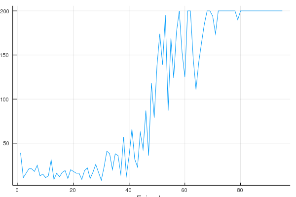

A Quick Example
Welcome to the world of reinforcement learning in Julia! Here's a quick example to show you how to train an agent with a BasicDQNLearner to play the CartPoleEnv.
Notice that a lot of dependent packages are under rapid development. To make sure that you can reproduce the result in this example, you are suggested to:
- Make sure that your Julia version is
v1.3-rc3or above - Clone
git@github.com:JuliaReinforcementLearning/ReinforcementLearning.jl.git cd ReinforcementLearning.jljulia --project=docs]instantiate
First, let's make sure that running the following code will not trigger any error:
using ReinforcementLearning, ReinforcementLearningEnvironments, Flux
using StatsBase:meanCartpole is considered to be one of the simplest environments for DRL(Deep Reinforcement Learning) algorithms testing. The state of the Cartpole environment can be described with 4 numbers and the actions are two integers(1 and 2). Before game terminates, agent can gain a reward of +1 for each step. And the game will be forced to end after 200 steps, thus the maximum reward of an episode is 200.
env = CartPoleEnv(;T=Float32)
ns, na = length(observation_space(env)), length(action_space(env)) # (4, 2)(4, 2)Then we can create an agent:
backend = :Zygote
device = :cpu
agent = Agent(
π = QBasedPolicy(
learner = BasicDQNLearner(
approximator = NeuralNetworkQ(
model = Chain(
Dense(ns, 128, relu; backend=backend),
Dense(128, 128, relu; backend=backend),
Dense(128, na; backend=backend)
),
optimizer = ADAM(),
device = device
),
batch_size = 32,
min_replay_history = 100,
loss_fun = huber_loss,
),
selector = EpsilonGreedySelector{:exp}(ϵ_stable = 0.01, decay_steps = 500),
),
buffer = circular_RTSA_buffer(
capacity = 1000,
state_eltype = Vector{Float32},
state_size = (ns,),
)
)Agent{QBasedPolicy{BasicDQNLearner{NeuralNetworkQ{:cpu,Chain{Tuple{Flux.Dense{typeof(NNlib.relu),Array{Float32,2},Array{Float32,1}},Flux.Dense{typeof(NNlib.relu),Array{Float32,2},Array{Float32,1}},Flux.Dense{typeof(identity),Array{Float32,2},Array{Float32,1}}}},Flux.Optimise.ADAM,Zygote.Params},typeof(huber_loss)},EpsilonGreedySelector{:exp}},CircularTurnBuffer{(:reward, :terminal, :state, :action),Tuple{Float32,Bool,Array{Float32,1},Int64},NamedTuple{(:reward, :terminal, :state, :action),Tuple{CircularArrayBuffer{Float32,1},CircularArrayBuffer{Bool,1},CircularArrayBuffer{Array{Float32,1},2},CircularArrayBuffer{Int64,1}}}},Symbol}(QBasedPolicy{BasicDQNLearner{NeuralNetworkQ{:cpu,Chain{Tuple{Flux.Dense{typeof(NNlib.relu),Array{Float32,2},Array{Float32,1}},Flux.Dense{typeof(NNlib.relu),Array{Float32,2},Array{Float32,1}},Flux.Dense{typeof(identity),Array{Float32,2},Array{Float32,1}}}},Flux.Optimise.ADAM,Zygote.Params},typeof(huber_loss)},EpsilonGreedySelector{:exp}}(BasicDQNLearner{NeuralNetworkQ{:cpu,Chain{Tuple{Flux.Dense{typeof(NNlib.relu),Array{Float32,2},Array{Float32,1}},Flux.Dense{typeof(NNlib.relu),Array{Float32,2},Array{Float32,1}},Flux.Dense{typeof(identity),Array{Float32,2},Array{Float32,1}}}},Flux.Optimise.ADAM,Zygote.Params},typeof(huber_loss)}(NeuralNetworkQ{:cpu,Chain{Tuple{Flux.Dense{typeof(NNlib.relu),Array{Float32,2},Array{Float32,1}},Flux.Dense{typeof(NNlib.relu),Array{Float32,2},Array{Float32,1}},Flux.Dense{typeof(identity),Array{Float32,2},Array{Float32,1}}}},Flux.Optimise.ADAM,Zygote.Params}(Chain(Dense(4, 128, relu; backend=Zygote), Dense(128, 128, relu; backend=Zygote), Dense(128, 2; backend=Zygote)), Flux.Optimise.ADAM(0.001, (0.9, 0.999), IdDict{Any,Any}()), Params([Float32[-0.09408988 0.14165749 -0.092088565 -0.02588605; 0.11846615 -0.06076146 -0.023047086 -0.14934573; … ; -0.08106611 -0.18100913 0.212019 -0.006396727; -0.1463466 -0.05458412 -0.025337836 0.005903717], Float32[0.0, 0.0, 0.0, 0.0, 0.0, 0.0, 0.0, 0.0, 0.0, 0.0 … 0.0, 0.0, 0.0, 0.0, 0.0, 0.0, 0.0, 0.0, 0.0, 0.0], Float32[-0.08302641 0.013984849 … 0.14609466 0.14286605; -0.057777695 -0.03390982 … 0.10506073 0.013057561; … ; 0.1041906 -0.066400036 … -0.07381944 0.017013201; -0.040603746 0.13533881 … 0.12392832 -0.11473322], Float32[0.0, 0.0, 0.0, 0.0, 0.0, 0.0, 0.0, 0.0, 0.0, 0.0 … 0.0, 0.0, 0.0, 0.0, 0.0, 0.0, 0.0, 0.0, 0.0, 0.0], Float32[0.16698317 0.1363972 … -0.0996437 0.08168056; -0.10660339 0.06148297 … 0.0036677995 0.13261491], Float32[0.0, 0.0]])), ReinforcementLearning.Utils.huber_loss, 0.99f0, 32, 1, 100), EpsilonGreedySelector{:exp}(0.01, 1.0, 0, 500, 1)), NamedTuple{(:reward, :terminal, :state, :action),Tuple{Float32,Bool,Array{Float32,1},Int64}}[], :DEFAULT)Relax! We promise that all the new concepts above will be explained in detail later.
For now, you only need to know that an Agent is usually composed by a policy and a buffer. Here we are using a very common QBasedPolicy and a circular_RTSA_buffer. For a QBasedPolicy we need to provide a learner and a selector. The learner here is used to provide the value estimations of all actions in a step, and the selector is use to select an action based on those estimations. For a buffer, it stores some transitions between an agent and an environment and is used to improve the policy. That's all!
To record the reward and performance , we need some hooks:
hook = ComposedHook(
TotalRewardPerEpisode(),
TimePerStep()
)ComposedHook{Tuple{TotalRewardPerEpisode,TimePerStep}}((TotalRewardPerEpisode(Float64[], 0.0, "TRAINING"), TimePerStep(Float64[], 0x000000681358e6cb)))And finally, let's push the button:
run(agent, env, StopAfterStep(10000; is_show_progress=false); hook = hook)
print("""
backend = $backend, device = $device
avg_reward = $(mean(hook[1].rewards))
avg_fps = $(1/mean(hook[2].times))
""")We can also plot the rewards stored in our hook:
using Plots
plot(hook[1].rewards, xlabel="Episode", ylabel="Reward", label="")WARNING: using Plots.backend in module ex-1 conflicts with an existing identifier.
/home/travis/.julia/packages/GR/ZI5OE/src/../deps/gr/bin/gksqt: error while loading shared libraries: libQt5Widgets.so.5: cannot open shared object file: No such file or directory
connect: Connection refused
GKS: can't connect to GKS socket application
Did you start 'gksqt'?
GKS: Open failed in routine OPEN_WS
GKS: GKS not in proper state. GKS must be either in the state WSOP or WSAC in routine ACTIVATE_WS
That's fantastic!
"But I'm new to Julia and RL. Can I learn RL by using this package?"
Yes! One of this package's main goals is to be educational. Reinforcement Learning: An Introduction is a good introductory book. And we reproduce almost all the examples mentioned in that book by using this package here.
"What if I have a solid background in RL but new to Julia?"
Programming isn't hard. Programming well is very hard! - CS 3110
Fortunately, Julia provides some amazing features together with many awesome packages to make things much easier. We provide a Tips for Developers section to help you grasp Julia in depth.
"I'm experienced in both Julia and RL. But I find it hard to use this package..."
Although we tried our best to make concepts and codes as simple as possible, it is still possible that they are not very intuitive enough. So do not hesitate to JOIN US (create an issue or a PR). We need YOU to improve all this stuff together!